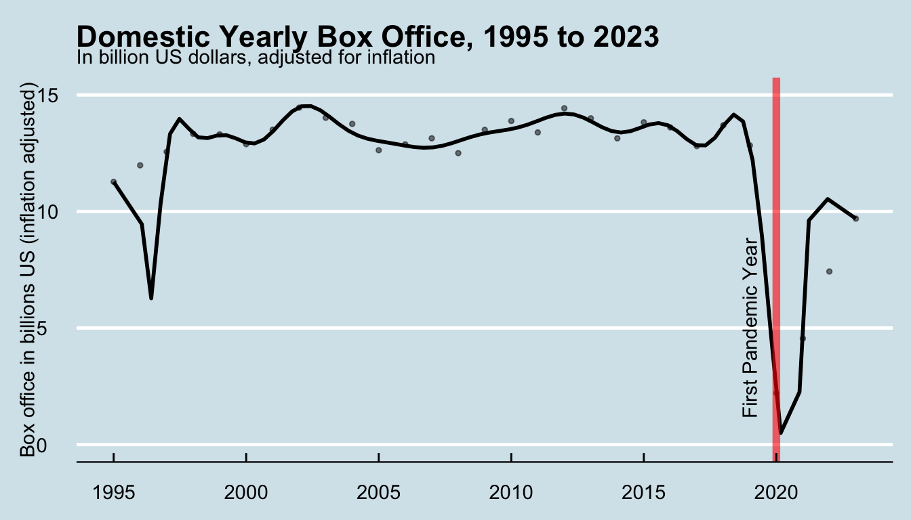
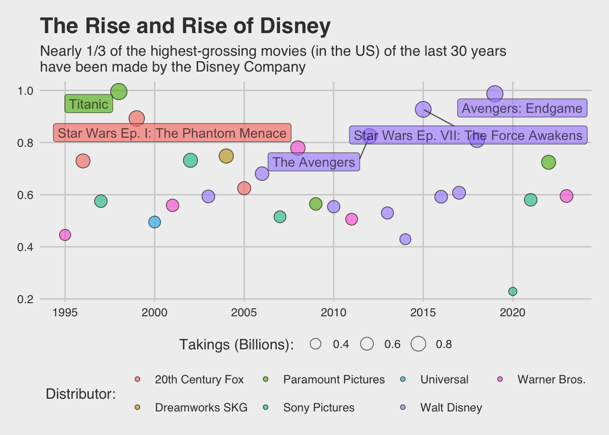

Information Visualization and the Humanities: Course Book
Author
Yann Ryan
Published
September 1, 2024
Course Overview
Welcome! You’re probably here because you are taking the course Information Visualization and the Humanities, taking place in Semester 1, 2024-2025, at Leiden University. It’s part of the minor in Digital Humanities. The course instructor is Dr. Yann Ryan.
This e-book will serve as the course website. The menu on the left side lists the chapters, one for each week of the course. More will appear as the course progresses. The menu on the right contains the table of contents for this particular chapter, so you can skip to different sections.
You’ll also need to familiarise yourself with the course Brightspace area, where I’ll put further information and you’ll submit assignments.
What do we mean by ‘information visualisation’?
Information visualization (or data visualization, which I’ll use interchangeablely) could be defined as the graphical representation of information and data.
Data visualization is often used to convey or communicate messages about complex or large-scale data. It has been around in its present form—charts, graphs and so forth—since at least the eighteenth century. One form of data visualisation—maps—have been around for even longer. Today, we come across data visualizations in our daily lives: in everything from scientific articles to news media, and in advertisements.
In the humanities, the data we use might be, for example, historical statistics or networks, or the text (or data derived from it) found in literary works. It might be something totally different such as audio, images, or spatial data.
Course Aims and Objectives
At the end of this course, you will:
Be able to construct data visualisations from scratch using the coding language R.
Use online publication formats such as Markdown to make professional-standard visual essays containing code, visualisations, and explanatory text.
Understand how a FAIR (Findable, Accessible, Interoperable, and Reusable) approach to data is important for your work and that of others.
Be able to critically reflect on a range of visualizations, with a specific focus on network and spatial data.
Know where to find some of the inspiring visualizations, thinkers, and designers in this field.
Be able to discuss your views on information visualization with peers as well as give and receive feedback.
In terms of concrete skills, by the end of this course, you should be able to use humanities-focused data to make informative, highly-customised visualisations such as this:
Show the code
library(tidyverse)library(ggthemes)options(scipen =999999)df = data.table::fread('box_office.csv')df = df %>%mutate(billions =total_inflation_adjusted_box_office/1000000000 )ggplot() +geom_point(data = df, aes(year, as.numeric(billions)), size=1, alpha = .5) +geom_smooth(data = df, aes(year, as.numeric(billions)), method ="lm",formula = y ~poly(x, 23), se =FALSE, color ='black', alpha = .75) +scale_y_continuous(limits =c(0, 15)) +labs(title ='Domestic Yearly Box Office, 1995 to 2023', subtitle ="In billion US dollars, adjusted for inflation", x =NULL, y ="Box office in billions US (inflation adjusted)") +geom_vline(xintercept=2020, color ='red', alpha = .6, size =2) +annotate("text", x=2019, y=5, label="First Pandemic Year", angle=90) +theme_economist()

or this:
Show the code
library(ggrepel)df2 = data.table::fread("top_movie.csv")df2 = df2 %>%mutate(billions =total_in_2022_dollars/1000)top_data = df2 %>%slice_max(order_by = total_in_2022_dollars, n =5) p =ggplot() +geom_point(data = df2,(aes(x = year, y = billions, size = billions, fill = distributor)), pch =21, color ='black', alpha = .6, stroke= .5) +geom_label_repel(data = top_data, aes(x = year, y = billions, label = movie, fill = distributor), alpha = .6,show.legend=FALSE) +scale_size_area(max_size =6) +labs(title ="The Rise and Rise of Disney", subtitle ="Nearly 1/3 of the highest-grossing movies (in the US) of the last 30 years\nhave been made by the Disney Company") +theme_fivethirtyeight() +labs(y ="Box office in billions US (inflation adjusted)", size ="Takings (Billions): ", fill ='Distributor: ') +theme(legend.position ='bottom', legend.box="vertical", legend.margin=margin())p

Perhaps most importantly, you will have total control over every aspect of the visualisation, from the colours, to the titles, labels, and scales. Use the ‘show the code’ button above the visualisation to see the code it was made from.
Your final and most important piece of work will be a Markdown report: a publishable document containing code, text, and data visualisations. This report will show off all the skills you have learned during the course. You can see some examples from last year as an appendix to this book.
Information Visualisation…
Most importantly, you’ll learn the basic principles of information visualization, and put them into practice using a platform called R (more on that below). R is widely used by, for example, data journalists at publications like The Economist and the Financial Times.
Using a language like R or python instead of Excel or a simple application for visualising data has many advantages. For one, it’s much easier to work with large datasets. You want to analyse huge datasets of movies like these ones, with 11 millions rows of data? It’ll take a split second in R. A second advantage is that everything you make can be reproducible, meaning your visualisations and analyses can be scientifically checked and verified.
The visualisations above were made with a few lines of the R language. If you click the ‘Show the code’ button above them, you’ll see the code I used to create them. It might look a little complicated now, but if you follow the course, you should be able to make similar (and hopefully much nicer) ones by the end of the twelve weeks.
In your final project, you’ll combine text, data and visual outputs to make a report on a topic you’re interested in. You’ll make a document like this. For this course, it’s more than enough to stick to the basic charts like the above. But if you’re interested, you can explore fancier things such as interactive maps and charts, 3D-rendered visualisations, and more.
…and the Humanities
This is not to say the course will be an exhaustive ‘how to’ for scientific data visualisations. One of your superpowers as a humanities student is that you learn to to move beyond the surface level and consider the subtexts, biases, and so forth in cultural objects. In this course, we’ll put those skills to good use, and you’ll use your own expertise and interests to tell compelling and truthful stories about humanities subjects, using data.
Just as importantly, you’ll learn how to critique data visualisations and design. As a group we’ll ask: what makes them good or bad, scientific or unethical? Can we trust the intentions behind commercial or political data visualisations? Can we spot when they are being misleading, and describe exactly how? What are the negative and positive connotations around certain graphical representations, and why do we use them? How can we make better, more ethical data visualisations? How can we make visualisations which properly consider those with accessibility needs?
Doing not reading.. mostly
This will be a ‘doing’ course: you’ll spend most of your self-study time completing at-home exercises and assignments. There will be two compulsory readings to get a background on some of the wider themes of the course, which we will discuss in class. The two pieces we’ll read are:
D’Ignazio, C. and Klein, L. (2020) ‘2. Collect, Analyze, Imagine, Teach’, in Data Feminism. Available at: https://data-feminism.mitpress.mit.edu/pub/ei7cogfn (read before the class of the 11th November)
Drucker, J., 2011. Humanities Approaches to Graphical Display. Digital Humanities Quarterly, 005(1). Available at https://www.digitalhumanities.org/dhq/vol/5/1/000091/000091.html (read before the class of 9th December)
There will also be some weekly recommended reading if you would like to dig deeper into topics on your own time. You can find it near the end of this page.
Schedule
Below is the course schedule. In the first couple of weeks, you’ll learn how to do the very basics using the coding language R. This will be followed by three weeks focusing on data analysis, then two blocks of three: first, data visualisation, and second, digital mapping. We’ll wrap things up with a week on creating polished, publishable data vis.
Course Schedule
Week
Date
Topic
Topic
Assignment
1
2024-09-09
Introductions
2
2024-09-16
Design and datavis fundamentals
3
2024-09-23
Introduction to R
How to use R and Posit cloud
Assignment 1 (datavis critique) due
4
2024-09-30
Data analysis 1
Working with dataframes. Selecting and subsetting data.
5
2024-10-07
Data analysis 2
Filtering and changing data
6
2024-10-14
Data analysis 3
Summarising and grouping data
7
2024-10-21
Data visualisation 1
Getting started with R and ggplot2.
8
2024-11-04
Data visualisation 2
Working with colours and scales
Assignment 2 (create a datavis) due
9
2024-11-11
Data visualisation 3
Accessibility and ethics of datavis
Read assigned paper before class.
10
2024-11-18
Digital mapping 1
Working with R as a GIS. Creating base maps.
11
2024-11-25
Digital mapping 2
Creating a data map
12
2024-12-02
Digital mapping 3
Create points maps and showcase work.
Assignment 3 (create a map visualisation) due
13
2024-12-09
Finishing touches
Designing publishable visualisations and working with markdown.
Read assigned paper before class.
Data Visualisation
In practice, creating data visualisations involves mapping numerical data of some sort to graphical representations - often called geometries. A geometry might be the length of a line, the x and y position on a graph, or the temperature of a colour on a map. A good data visualisation will use this mapping to tell a story about the data, while representing it faithfully.
You’ll put these skills into practice using a tool called R. R is a coding language often used for data science - it’s particularly good at working with what are called ‘dataframes’: structured data in the form of rows and columns which we’ll mostly be using on this course.
To begin with, you’ll practice the basics using interactive code snippets embedded directly in this book. Later, we have set up a learning environment called ‘Posit cloud’, where you can import data, export visualisations, and code in a ‘real world’ way.
Using a coding language like this allows us to have direct control over every aspect of a visualisation - we can choose from many different geometries depending on our data and what we want to show, adjust the colours in precise ways, and pick the scale we want to use. We can also use R to summarise data, or limit it to just the parts we want to work with. This will complement the learning of Python you’re doing in your other course.
In this course, you’ll learn these very practical skills. It might be hard-going or frustrating at first, but it is very worthwhile. Skills in R or any other programming language are very valuable to all sorts of employers.
At the same time, there is one important thing to note:
Your grade for any assessment will never be dependent on your coding ability.
This is not a coding course: some of you may pick it up straight away, and others may stay at a basic level throughout the course. That is completely fine. You are welcome to ask for help from me, your peers, and online. In all your assessments, I’ll take into account your understanding of data science and visualisations on a more fundamental, humanities-led level.
It’s easy to get stuck or lost in assignments. When you’re learning a new skill like coding, you can spend many hours agonising over what might turn out to be a simple problem when it’s explained to you.
The key is to stick strictly to the number of hours given to each assignment - don’t waste lots of time working out what might turn out to be a small mistake. Set a timer and stop when it runs out - make a note and we can discuss what went wrong in the next class.
Course Load
Total course load 5 EC x 28 hours = 140 hours:
Seminar: 13 x 2 (26 hours)
Course readings and coding practice (34 hours)
Assignment(s): (35 hours)
Peer Feedback: (5 hours)
Final project/paper: (40 hours)
Grading
Assignments: 40 percent
Class Participation & Peer Feedback: 20 percent
Final project: 40 percent
(Mostly recommended) Reading
This course will be very practical and your self-study time will be mostly spent completing exercises or assignments. As such, most of the reading is recommended rather than required. Some of the below will relate directly to the class and others I just think are interesting if you’d like to know more about the topic. Compulsory reading is marked in bold.
Day, Shawn. (2023) ‘Visualising humanities data’, in O’Sullivan, J. (ed.) The Bloomsbury Handbook to the Digital Humanities. London: Bloomsbury Publishing, pp. 211-219. (ebook available through the Library or open access version available here)
Chapter 3, ‘On Rational, Scientific, Objective Viewpoints from Mythical, Imaginary, Impossible Standpoints’, from the book Data Feminism (open access, available here)
2024-09-30
Claus Wilke, Fundamentals of Data Visualization (available online). Chapters 2, 3, and 4.
Claus Wilke, Fundamentals of Data Visualization (available online). Chapter 15.
9
2024-11-11
D’Ignazio, C. and Klein, L. (2020) ‘2. Collect, Analyze, Imagine, Teach’, in Data Feminism. Available at: https://data-feminism.mitpress.mit.edu/pub/ei7cogfn
10
2024-11-18
Venturini, T., Jacomy, M., & Jensen, P. (2021). What do we see when we look at networks: Visual network analysis, relational ambiguity, and force-directed layouts. Big Data & Society, 8(1). https://doi.org/10.1177/20539517211018488
Drucker, J., 2011. Humanities Approaches to Graphical Display. Digital Humanities Quarterly, 005(1). Available at https://www.digitalhumanities.org/dhq/vol/5/1/000091/000091.html
The Fine Print
Attendance is required. If you know you will need to miss a class, please indicate this at least two weeks prior. If you know beforehand you will have to miss three or more classes, you cannot take this course. If you miss a class due to sickness or other unforeseen circumstances, please notify me without delay.
Class participation is part of your final grade. Participation is evaluated both on attendance and on the quality of feedback given to the work of other students. Aside from participation being part of your grade, I really appreciate yourinput. If you think you have something to ask, please speak up: there are no stupid questions, but there are a lot of lost opportunities for information exchange and learning. This field is full of exciting new ideas and developments and it is impossible to be aware of them all. So, if you can share information on an idea, article, project, or tool that is of you value to you, please do!
If you need to speak to me, I’m happy to arrange a meeting to discuss any issues or problems you encounter on the course. Ideally, send a request a week in advance, via email.
Plagiarism: If you have not done so already, please inform yourself on Leiden University’s views and regulations on plagiarism. This Leiden university library portal has several accessible web courses on how to quote and cite right and tips for bibliographic management. Note that plagiarism, copyright and other information sharing or copying issues are often extra complex when dealing with digital sources. If you are still in doubt whether (parts of) any work for this course may constitute plagiarism, you need to signal and verify this with me before you hand it in for grading.
Use of Chatbots for assignments
GPT-based chatbots such as ChatGPT or Google Bard are not banned outright but should be used with extreme caution. Due to the nature of this course, chatbot-generated text is unlikely to be of much use as you will be responding to your own visual work and that of your peers.
You can make use of Chatbots for help with coding, however you must make it very clear that you have done so with the following steps:
Make it clear in your code, using comments, which parts were generated using a chatbot.
Include the entire prompt used as an appendix to your assignment.